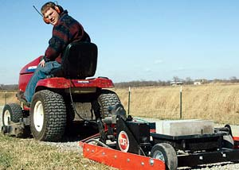

Anyone who has graded a driveway using a blade on a tractor knows that you need to put a lot of weight on the blade to do any good. But that’s not the only approach that works.
Last year DR Power Equipment introduced the Power Grader, an ingenious invention that grades dirt and gravel surfaces using a lawn tractor or ATV. We took advantage of the company’s trial offer and discovered that the grader works great!
The Power Grader is equipped with a line of carbide-steel “scarifiers,” or teeth, like those on some tractor blades, positioned in front of the grader’s blade. What makes the Power Grader different (in addition to not requiring a big tractor to pull it) is an actuator that lets you adjust the height of the grader’s wheels, raising or lowering the scarifiers.
I set the teeth a few millimeters below the roadbed for the first pass, then gradually lowered them until I had loosened 2 inches of rock and gravel. Then I pulled the grader up and down the driveway until it was just beautifully smooth. Compared to the tractor-mounted blades I’ve used, the Power Grader was easier to use and less likely to wreck the driveway.
At under $1,000 the Power Grader costs less than a box blade - not to mention the tractor you would need to pull it. And if you get some of your neighbors to share the cost, it becomes a very affordable way to keep country driveways in perfect condition.
|
 BRYAN WELCH This DR Power Grader can smooth out even the roughest driveways. |
|
|